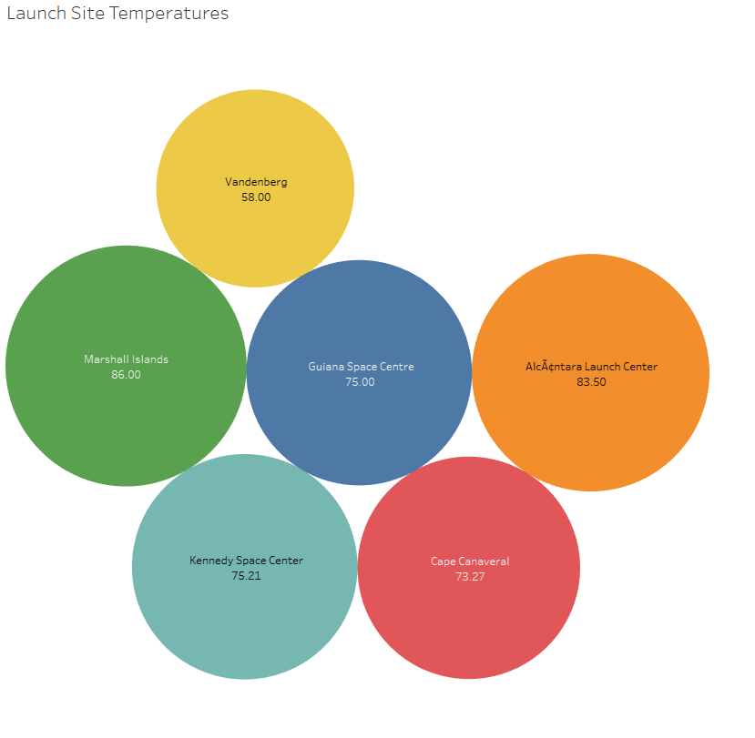
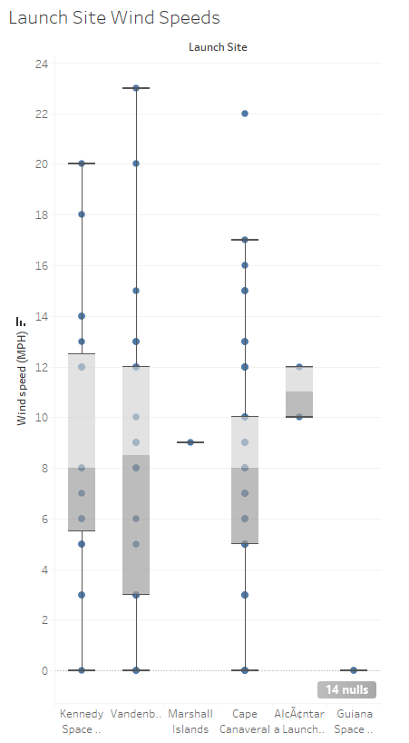
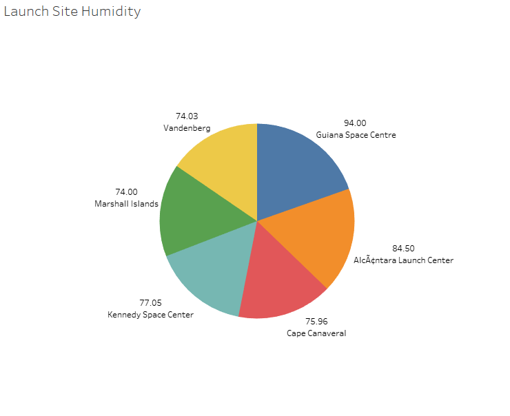
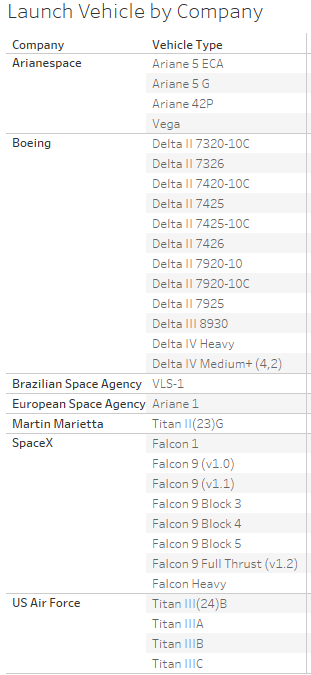
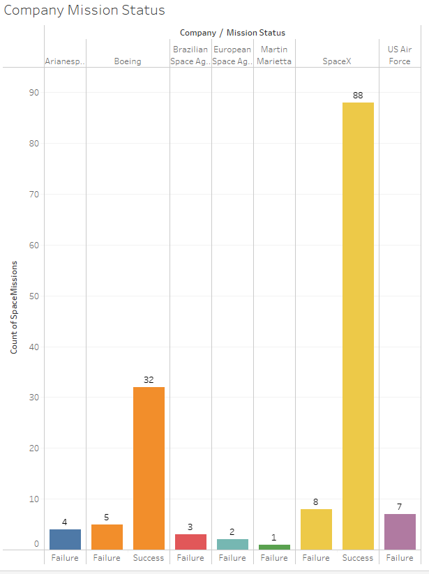
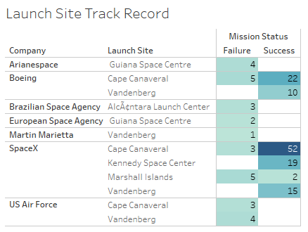

Space Missions Analysis
Exploring a dataset relating to Space Missions
In this project, I have used Tableau to explore and visualise insights into various ventures into space exploration.
Data Source
Average Temperature at Launch Sites

Average Wind Speed at Launch Sites

Average Humidity at Launch Sites

Launch Vehicles used by Company

Count of Successful and Unsuccessful Launches by Company

Count of Successful and Unsuccessful Launches by Launch Site
